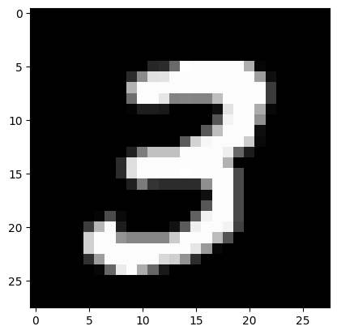
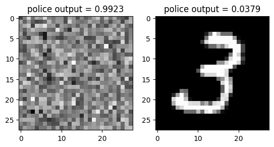
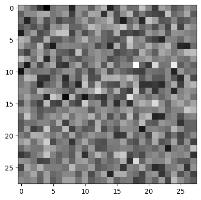
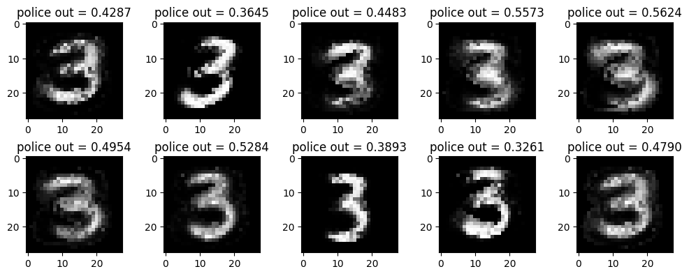

# {{<video https://youtu.be/playlist?list=PLQqh36zP38-xB7p8AzMKUrEfxL0Vte-pY&si=BwVUNxT8IIPrjIcA>}}14wk:

1. 강의영상
3. GAN (Goodfellow et al. 2014) intro
Goodfellow, Ian, Jean Pouget-Abadie, Mehdi Mirza, Bing Xu, David Warde-Farley, Sherjil Ozair, Aaron Courville, and Yoshua Bengio. 2014. “Generative Adversarial Nets.” Advances in Neural Information Processing Systems 27.
A. 잡썰
- 저자: 이안굿펠로우
- 천재임
- 지도교수가 요수아 벤지오
- 저는 아래의 논문 읽고 소름돋았어요..
- https://arxiv.org/abs/1406.2661
- 최근 10년간 머신러닝 분야에서 가장 혁신적인 아이디어이다. (얀르쿤, 2014년 시점..)
- 야사와 만화로 배우는 인공지능
- https://wedatalab.tistory.com/125
B. GAN의 원리
- GAN의 원리는 경찰과 위조지폐범이 서로 선의의(?) 경쟁을 통하여 서로 발전하는 모형으로 설명할 수 있다.
The generative model can be thought of as analogous to a team of fakers, trying to produce fake currency and use it without detection, while the discriminative model is analogous to the police, trying to detect the counterfeit currency. Competition in this game drives both teams to improve their methods until the counterfeits are indistiguishable from the genuine articles.
- 서로 적대적인(adversarial) 네트워크(network)를 동시에 학습시켜 가짜이미지를 만든다(generate)
- 무식한 상황극..
- 위조범: 가짜돈을 만들어서 부자가 되어야지! (가짜돈을 그림)
- 경찰: (위조범이 만든 돈을 보고) 이건 가짜다!
- 위조범: 걸렸군.. 더 정교하게 만들어야지..
- 경찰: (깜빡 속으며) 이건 진짠가?… –> 상사에게 혼남 –> 판별능력 업그레이드 –> 이건 가짜다!!
- 위조범: 더 정교하게 만들자..
- 경찰: 더 판별능력을 업그레이드 하자!
- 반복..
- 굉장히 우수한 경찰조차도 진짜와 가짜를 구분하지 못할때(=진짜 이미지를 0.5의 확률로만 진짜라고 말할때 = 가짜 이미지를 0.5의 확률로만 가짜라고 말할때) 학습을 멈춘다.
C. 생성모형이란? (쉬운 설명)
- 사진속에 들어있는 동물이 개인지 고양이인지 맞출수 있는 기계와 개와 고양이를 그릴수 있는 기계중 어떤것이 더 시각적보에 대한 이해가 깊다고 볼 수 있는가?
- 진정으로 인공지능이 이미지자료를 이해했다면, 이미지를 만들수도 있어야 한다. \(\to\) 이미지를 생성하는 모형을 만들어보자 \(\to\) 성공

- 뭘 분류하려는 목적을 가진게 판별모형이면 뭘 만들려는 목적을 가진게 생성모형이고 생성모형이 더 우수하다.
명언: 만들수 없다면 이해하지 못한 것이다, 리처드 파인만 (천재 물리학자)
D. 생성모형이란? 통계학과 버전의 설명
- 이미지 \(\boldsymbol{X}\) 가 주어졌을 경우 라벨을 \(y\) 라고 하자.
- 이미지를 보고 라벨을 맞추는 일은 \(p(y| \boldsymbol{X})\)에 관심이 있다고 볼 수 있다. – 판별모형
- 이미지를 생성하는 일은 \(p(\boldsymbol{X},y)\)에 관심이 있는것이다. – 생성모형
- 데이터의 생성확률 \(p(\boldsymbol{X},y)\)을 알면 클래스의 사후확률 \(p(y|\boldsymbol{X})\)를 알 수 있음. (아래의 수식 참고) 하지만 역은 불가능
\[p(y|{\boldsymbol X}) = \frac{p({\boldsymbol X},y)}{p({\boldsymbol X})} = \frac{p({\boldsymbol X},y)}{\sum_{y}p({\boldsymbol X},y)}\]
- 즉 이미지를 생성하는일은 분류문제보다 더 어려운 일이라 해석가능
E. 철학의 차이
명언: 제한된 정보만으로 어떤 문제를 풀 때, 그 과정에서 원래의 문제보다 일반적인 문제를 풀지 말고 (=문제를 괜히 어렵게 만들어서 풀지 말고), 가능한 원래의 문제를 직접 풀어야한다. 배프닉 (SVM 창시자)
- 따라서 배프닉의 원리에 의하면 일반적인 분류문제를 해결할때 “판별모형이 생성모형보다 더 바람직한 접근법”이라 할 수 있음. 즉 개와 고양이를 구분할 때, 그려진 개와 고양이 사진을 잘 구분하면 되는 것이지 굳이 개와 고양이를 그릴줄 알아야하는건 아니라는 의미.
* 예전에는 머신러닝의 응용분야가 “분류/회귀”에 한정된 느낌이었는데 요즘은 생성모형도 인기있음.
- 마인드가 되게 달라요
4. GAN의 구현
A. Data
train_dataset = torchvision.datasets.MNIST(root='./data', train=True, download=True)
to_tensor = torchvision.transforms.ToTensor()
X_real = torch.stack([to_tensor(Xi) for Xi, yi in train_dataset if yi==3])plt.imshow(X_real[0].squeeze(),cmap="gray")
B. 페이커 생성
“net_faker: noise \(\to\) 가짜이미지” 를 만들자.
- 네트워크의 입력: (n,??) 인 랜덤으로 뽑은 숫자.
torch.randn(1,4) # 이게 입력으로 온다고 상상하자. tensor([[-0.9855, 1.0043, -0.4022, -0.0478]])- 네트워크의 출력: (n,1,28,28)의 텐서
class FlattenToImage(torch.nn.Module):
def __init__(self):
super().__init__()
def forward(self,X):
return X.reshape(-1,1,28,28)
net_facker = torch.nn.Sequential(
torch.nn.Linear(4,64),
torch.nn.ReLU(),
torch.nn.Linear(64,64),
torch.nn.ReLU(),
torch.nn.Linear(64,784),
torch.nn.Sigmoid(), # 출력을 0~1로 눌러주기 위한 레이어 // 저한테는 일종의 문화충격
FlattenToImage()
)net_facker(torch.randn(1,4)).shapetorch.Size([1, 1, 28, 28])C. 경찰 생성
net_police: 진짜이미지 \(\to\) 0 // 가짜이미지 \(\to\) 1 와 같은 네트워크를 설계하자.
- 네트워크의 입력: (n,1,28,28) 인 이미지
- 네트워크의 출력: 0,1
net_police = torch.nn.Sequential(
torch.nn.Flatten(),
torch.nn.Linear(784,30),
torch.nn.ReLU(),
torch.nn.Linear(30,1),
torch.nn.Sigmoid()
)D. 바보경찰, 바보페이커
- 데이터
real_image = X_real[[0]] # 진짜이미지
fake_image = net_facker(torch.randn(1,4)).data # 가짜이미지- 경찰네트워크가 가짜이미지를 봤을때 어떤 판단을 하는지, 진짜 이미지를 봤을떄 어떤 판단을 하는지 살펴보자.
<경찰이 진짜이미지를 봤다면>
net_police(real_image)tensor([[0.4764]], grad_fn=<SigmoidBackward0>)<경찰이 가짜이미지를 봤다면>
net_police(fake_image)tensor([[0.4968]], grad_fn=<SigmoidBackward0>)E. 똑똑해진 경찰
- 데이터를 정리
- 원래 \(n=6131\)개의 이미지자료가 있었음. 이를 \({\bf X}_{real}\) 로 저장했었음.
- \({\bf X}_{fake}\)는
net_facker의 output으로 생성하고 꼬리표 제거. - \({\bf X}_{real}\)에 대응하는 \({\bf y}_{real}\) 생성. 진짜이미지는 라벨을 0으로 정함.
- \({\bf X}_{faker}\)에 대응하는 \({\bf y}_{fake}\) 생성. 가짜이미지는 라벨을 1로 정함.
X_fake = net_facker(torch.randn(6131,4)).data
y_real = torch.zeros((6131,1))
y_fake = torch.ones((6131,1))- step1: X_real, X_fake를 보고 각각 yhat_real, yhat_fake를 만드는 과정
yhat_real = net_police(X_real)
yhat_fake = net_police(X_fake)- step2: 경찰의 미덕은 (1) 가짜이미지를 가짜라고 하고 (2) 진짜이미지를 진짜라고 해야함. 즉 yhat_real 은 거의 0의 값으로, 그리고 yhat_fake는 1이 되도록 설계해야함. (yhat_real \(\approx\) y_real 이고 yhat_fake \(\approx\) y_fake 이어야 함) 이러면 경찰이 잘하는것.
bce = torch.nn.BCELoss()loss_police = bce(yhat_real,y_real) + bce(yhat_fake,y_fake)
loss_policetensor(1.3961, grad_fn=<AddBackward0>)- step3~4
# net_police = torch.nn.Sequential(
# torch.nn.Flatten(),
# torch.nn.Linear(784,30),
# torch.nn.ReLU(),
# torch.nn.Linear(30,1),
# torch.nn.Sigmoid()
# )
bce = torch.nn.BCELoss()
optimizr_police = torch.optim.Adam(net_police.parameters())
for epoc in range(30):
X_fake = net_facker(torch.randn(6131,4)).data
# step1 -- yhat을 얻음
yhat_real = net_police(X_real)
yhat_fake = net_police(X_fake)
# step2 -- loss를 계산
loss_police = bce(yhat_real,y_real) + bce(yhat_fake,y_fake)
# step3 -- 미분
loss_police.backward()
# step4 -- update
optimizr_police.step()
optimizr_police.zero_grad()- 경찰의 실력향상을 감상해보자.
net_police(X_real) # 거의 0으로 tensor([[0.0145],
[0.0247],
[0.0160],
...,
[0.0240],
[0.1189],
[0.0379]], grad_fn=<SigmoidBackward0>)net_police(net_facker(torch.randn(6131,4)).data) # 거의 1로tensor([[0.9924],
[0.9922],
[0.9924],
...,
[0.9924],
[0.9923],
[0.9923]], grad_fn=<SigmoidBackward0>)- 꽤 우수한 경찰이 되었음.
fig, ax = plt.subplots(1,2)
ax[0].imshow(X_fake[[2]].squeeze(),cmap="gray")
ax[0].set_title(f"police output = {net_police(X_fake[[2]]).item():.4f}")
ax[1].imshow(X_real[[-1]].squeeze(),cmap="gray")
ax[1].set_title(f"police output = {net_police(X_real[[-1]]).item():.4f}")Text(0.5, 1.0, 'police output = 0.0379')
F. 더 똑똑해지는 페이커
- step1: noise \(\to\) X_fake
X_fake = net_facker(torch.randn(6131,4))
# 여기서는 X_fake가 데이터가 아니고 네트워크 출력이므로 꼬리표를 제거하지 말아야함- step2: 손실함수 - 페이커의 미덕 (잘 훈련된) 경찰이 가짜이미지를 진짜라고 판단하는 것. 즉 yhat_fake \(\approx\) y_real 이어야 페이커의 실력이 우수하다고 볼 수 있음.
yhat_fake = net_police(X_fake)
loss_faker = bce(yhat_fake, y_real)
# 가짜이미지를 보고 잘 훈련된 경찰도
# 진짜 이미지라고 깜빡 속으면
# 위조범의 실력이 좋다고 볼 수 있다는 의미- step3~4:
class FlattenToImage(torch.nn.Module):
def __init__(self):
super().__init__()
def forward(self,X):
return X.reshape(-1,1,28,28)
net_facker = torch.nn.Sequential(
torch.nn.Linear(4,64),
torch.nn.ReLU(),
torch.nn.Linear(64,64),
torch.nn.ReLU(),
torch.nn.Linear(64,784),
torch.nn.Sigmoid(), # 출력을 0~1로 눌러주기 위한 레이어 // 저한테는 일종의 문화충격
FlattenToImage()
)
bce = torch.nn.BCELoss()
optimizr_facker = torch.optim.Adam(net_facker.parameters())for epoc in range(1):
# step1 -- yhat을 얻음
X_fake = net_facker(torch.randn(6131,4))
# step2 -- loss를 계산
yhat_fake = net_police(X_fake)
loss_faker = bce(yhat_fake,y_real)
# step3 -- 미분
loss_faker.backward()
# step4 -- update
optimizr_facker.step()
optimizr_facker.zero_grad()- 위조범의 실력향상을 감상해보자.
plt.imshow(X_fake[[0]].squeeze().data,cmap="gray")
G. 경쟁학습
두 적대적인 네트워크를 경쟁시키자!
torch.manual_seed(43052)
net_police = torch.nn.Sequential(
torch.nn.Flatten(),
torch.nn.Linear(784,30),
torch.nn.ReLU(),
torch.nn.Linear(30,1),
torch.nn.Sigmoid()
)
class FlattenToImage(torch.nn.Module):
def __init__(self):
super().__init__()
def forward(self,X):
return X.reshape(-1,1,28,28)
net_facker = torch.nn.Sequential(
torch.nn.Linear(4,64),
torch.nn.ReLU(),
torch.nn.Linear(64,64),
torch.nn.ReLU(),
torch.nn.Linear(64,784),
torch.nn.Sigmoid(), # 출력을 0~1로 눌러주기 위한 레이어 // 저한테는 일종의 문화충격
FlattenToImage()
)
bce = torch.nn.BCELoss()
optimizr_police = torch.optim.Adam(net_police.parameters(),lr=0.001, betas=(0.5,0.999))
optimizr_facker = torch.optim.Adam(net_facker.parameters(),lr=0.0002, betas=(0.5,0.999))for epoc in range(1000):
#--- net_police 를 훈련
#step1
X_fake = net_facker(torch.randn(6131,4)).data # 여기에서 X_fake는 data를 의미
yhat_real = net_police(X_real)
yhat_fake = net_police(X_fake)
#step2
loss_police = bce(yhat_real,y_real) + bce(yhat_fake,y_fake)
#step3
loss_police.backward()
#step4
optimizr_police.step()
optimizr_police.zero_grad()
#--- net_faker 를 훈련
#step1
X_fake = net_facker(torch.randn(6131,4)) # 이때 X_fake는 net의 out을 의미
#step2
yhat_fake = net_police(X_fake)
loss_facker = bce(yhat_fake, y_real)
#step3
loss_facker.backward()
#step4
optimizr_facker.step()
optimizr_facker.zero_grad()fig, ax = plt.subplots(2,5,figsize=(10,4))
k=0
for i in range(2):
for j in range(5):
ax[i][j].imshow(X_fake[[k]].data.squeeze(),cmap="gray")
ax[i][j].set_title(f"police out = {net_police(X_fake[[k]]).item():.4f}")
k= k+1
fig.tight_layout()
5. 초기 GAN의 한계점
- 두 네트워크의 균형이 매우 중요함 – 균형이 깨지는 순간 학습은 실패함
- 생성되는 이미지의 다양성이 부족한 경우가 발생함. (mode collapse)